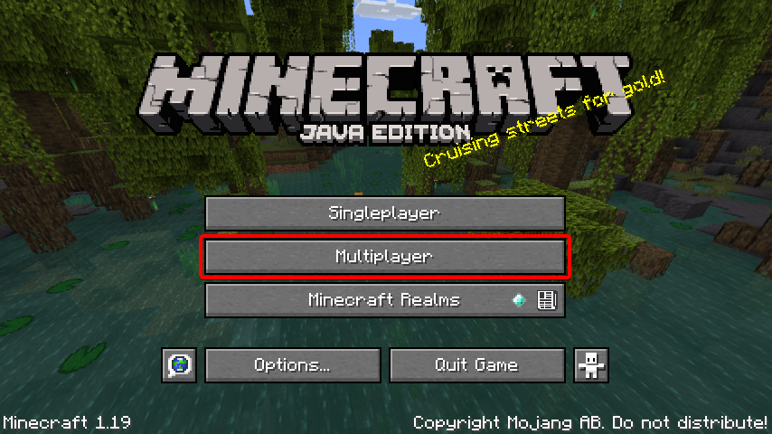

Multiplayer
Multiplayer in Minecraft enables multiple players to interact and communicate with each other on a single world. It is available through direct game-to-game multiplayer, LAN play, local split screen (console-only), and servers (player-hosted and business-hosted). Players can run their own servers, use a hosting provider, or connect directly to another player's game via Xbox Live. Single-player worlds have local area network support, allowing players to join a world on locally interconnected computers without a server setup. Minecraft multiplayer servers are guided by server operators, who have access to server commands such as setting the time of day and teleporting players. Operators can also set up restrictions concerning which usernames or IP addresses are allowed or disallowed to enter the server. Multiplayer servers have a wide range of activities, with some servers having their own unique rules and customs. The largest and most popular server is Hypixel, which has been visited by over 14 million unique players. Player versus player combat (PvP) can be enabled to allow fighting between players. Many servers have custom plugins that allow actions that are not normally possible.
